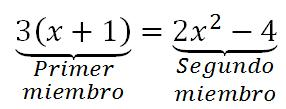

3. Ecuaciones
Hay muchas situaciones en las que necesitamos hallar cantidades desconocidas a partir de una serie de datos. Cada cantidad que no conozcamos va a ser una incógnita. En este apartado aprenderás a plantear y resolver ecuaciones en las que tenemos una sola incógnita a la que normalmente llamaremos x.
Se suele decir que las matemáticas nos rodean y, en el caso de las ecuaciones, es muy cierto. Por ejemplo, para que un aparato de GPS pueda determinar tu posición (incógnita), éste obtiene datos de al menos tres satélites con los que plantea una serie de ecuaciones que determinan la solución.
Imagen de 4657743 en Pixabay. Licencia Pixabay
Otro ejemplo lo encontramos en el termostato del aire acondicionado cuando los programamos y éste debe saber cuándo debe apagar y encender el equipo para que la temperatura esté según lo deseado. Más ecuaciones...
Aunque hemos dicho que aquí estudiaremos las ecuaciones con una incógnita, en un problema puedes encontrarte con varios datos desconocidos. También veremos que un mismo problema puede tener una, dos soluciones, o puede que ninguna ¡Incluso es posible que tenga infinitas soluciones! Pero, ¿sabes exactamente qué es una ecuación? Vamos a dar una definición.
Una ecuación es una expresión algebraica en la que establecemos una igualdad.
El signo igual separa la ecuación en dos miembros. Como es una expresión algebraica, estará formada por números, variables y operaciones. En el caso de las ecuaciones, a las variables las llamaremos incógnitas, pues son los valores que debemos descubrir.
